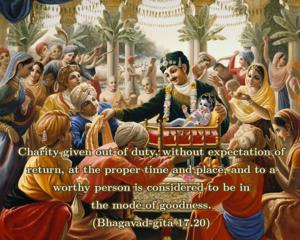
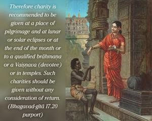
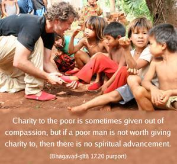
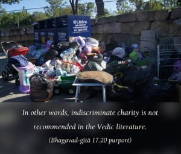

Charity given out of duty, without expectation of return, at the proper time and place, and to a worthy person is considered to be in the mode of goodness.




In the Vedic literature, charity given to a person engaged in spiritual activities is recommended. There is no recommendation for giving charity indiscriminately. Spiritual perfection is always a consideration. Therefore charity is recommended to be given at a place of pilgrimage and at lunar or solar eclipses or at the end of the month or to a qualified brāhmaṇa or a Vaiṣṇava (devotee) or in temples. Such charities should be given without any consideration of return. Charity to the poor is sometimes given out of compassion, but if a poor man is not worth giving charity to, then there is no spiritual advancement. In other words, indiscriminate charity is not recommended in the Vedic literature.